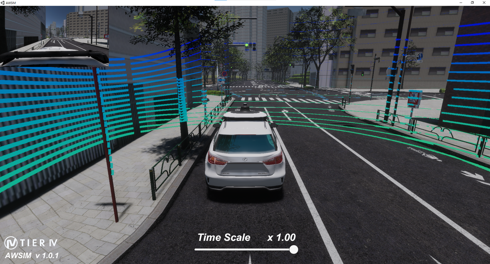
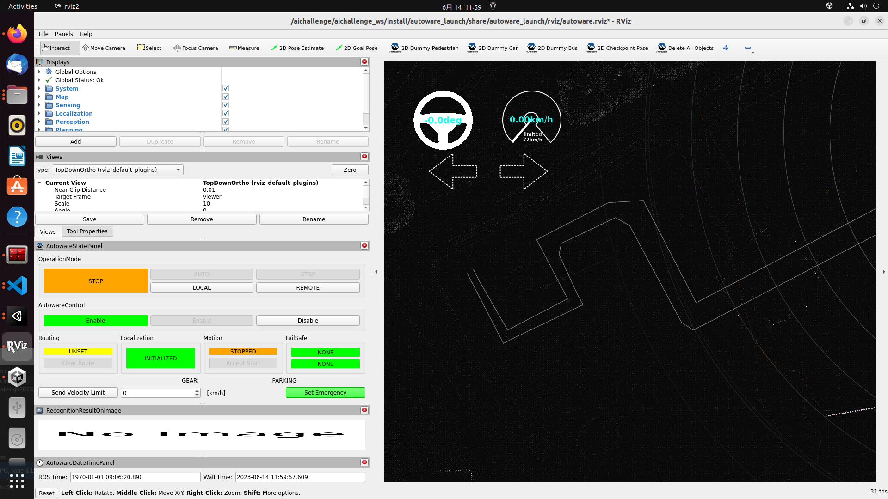
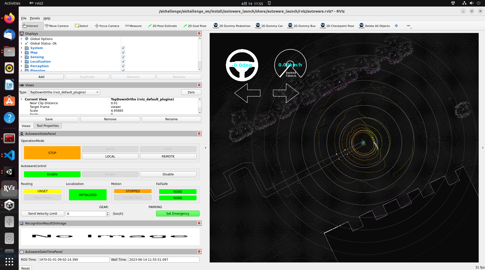
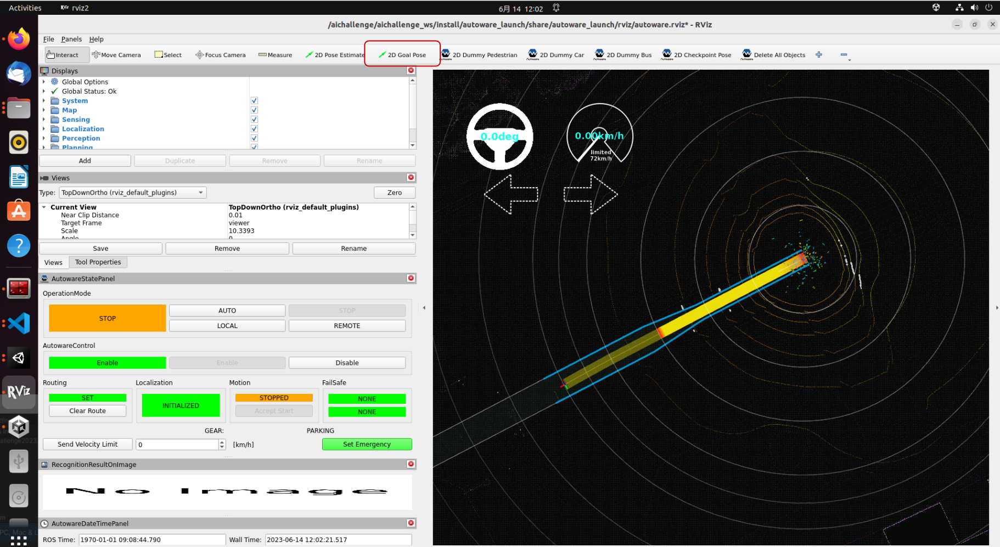
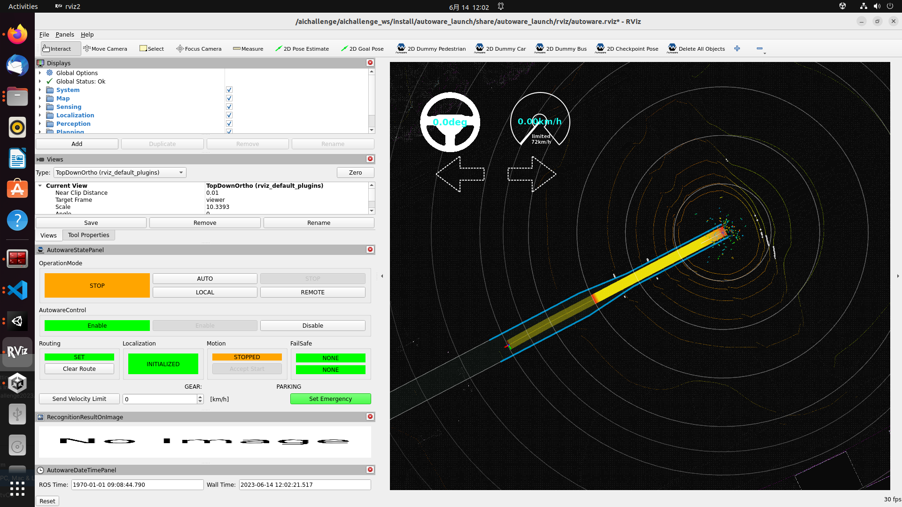
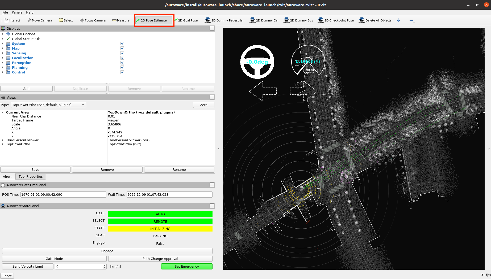
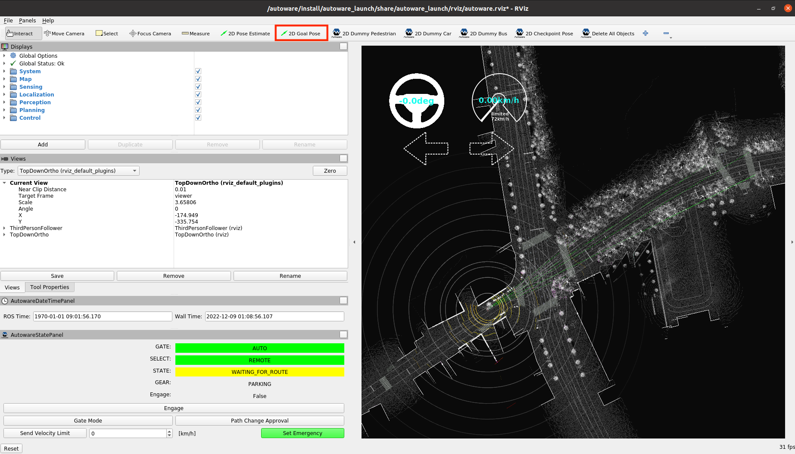
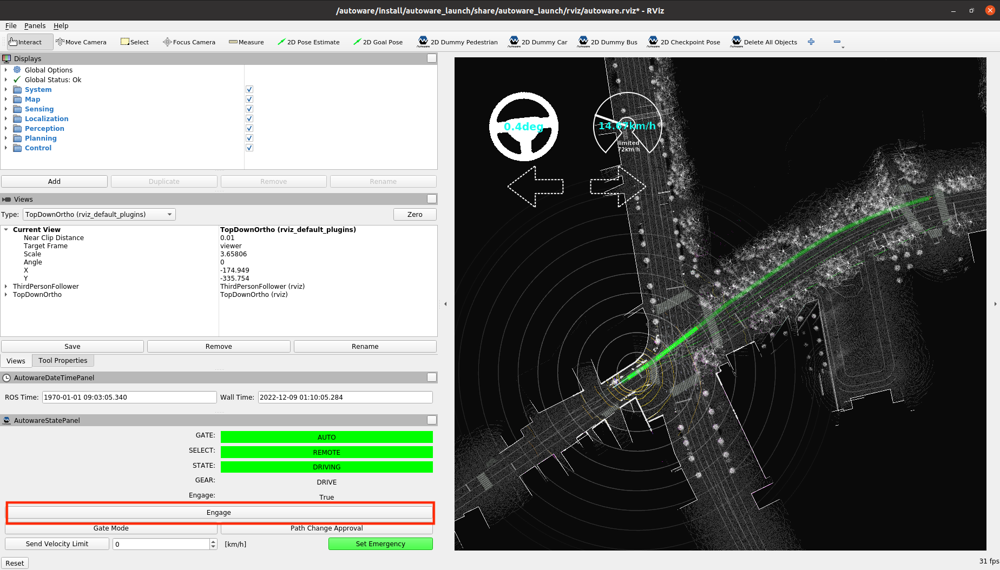

SetUp
Minimum Hardware Requirements
本大会で使用していただくPCの動作環境として以下を推奨しております。
- OS: Ubuntu 22.04
- CPU: Intel Corei7 (8 cores) or higher
- GPU: NVIDIA Geforce RTX 3080 (VRAM 12 GB) or higher
- Memory: 32 GB or more
- Storage: SSD 30 GB or higher
上記のスペックを満たすPCをご用意できない方は、下記の「PC2台で参加する方向け」のスペックをご参照ください。
2台のPCを使用する方向け
Autoware PC
- OS: Ubuntu 20.04
- CPU: Intel Corei7 (8 cores) or higher
- GPU: NVIDIA Geforce GTX 1080 or higher
- Memory: 16 GB or higher
- Storage: SSD 10 GB or higher
- 詳細はこちら
AWSIM PC
- OS: Ubuntu 22.04 or Windows 10/11
- CPU: Intel Corei7 (6 cores and 12 threads) or higher
- GPU: NVIDIA Geforce RTX 2080 Ti or higher
- 詳細はこちら
※Autoware動作PCとAWSIM動作PCは、同じネットワーク内に配置してください。 配置できていれば、基本的には追加設定をすることなく、PC間のトピック通信は可能です。万が一、トピック通信ができなかった場合はファイアーウォールの解除、もしくはルールの見直しをお願いします。
Environment Setup
AWSIM(Ubuntu)
事前準備
Nvidiaドライバのインストール
- リポジトリの追加
sudo add-apt-repository ppa:graphics-drivers/ppa- パッケージリストの更新
sudo apt update- インストール
sudo ubuntu-drivers autoinstall- 再起動の後、下記コマンドによりインストールできていることを確認
nvidia-smi
Vulkunのインストール
- パッケージリストの更新
sudo apt update- libvulkan1をインストール
sudo apt install libvulkan1コースの準備
- 大会用の実行ファイルをダウンロードし、解凍
- パーミッションを図のように変更

- ファイルをダブルクリックで起動
- 下記のような画面が表示されることを確認

AWSIM(Windows)
- 大会用の実行ファイルをダウンロードし、解凍
- ファイルをダブルクリックで起動
- 下記のような画面が表示されることを確認 
Autoware
本大会用にAutowareの Docker イメージ(CUDA利用）を用意しておりますので、ご利用ください。
事前準備
下記のインストールをお願いします。- docker
- rocker
- Dockerコンテナ内のRviz、rqtなどのGUIを使用するために用います。
- Nvidia Container Toolkit
- git lfs
- ROS2 (動画確認済バージョン: Humble)
Dockerイメージの準備・起動 〜 Autowareの準備
- Dockerイメージを入手
docker pull ghcr.io/automotiveaichallenge/aichallenge2022-sim/autoware-universe-cuda:3.1※上記の方法では長時間かかってしまう方・タイムアウトしてしまう方↓
こちらに、イメージをtarにまとめたものを置きましたので、下記コマンドよりご利用くださいdocker load < aichallenge2022_sim_autoware_v3.1.tar.gz- 大会用データのダウンロード
sudo apt install -y git-lfs git lfs clone https://github.com/AutomotiveAIChallenge/aichallenge2022-sim- rockerを起動
cd ./aichallenge2022-sim rocker --nvidia --x11 --user --net host --privileged --volume autoware:/aichallenge -- ghcr.io/automotiveaichallenge/aichallenge2022-sim/autoware-universe-cuda:3.1Autowareの動作確認
AWSIMを用いて、Autowareの動作確認を行う方法を記します。- AWSIMを起動
- Autowareを起動
# Rockerコンテナ内で cd /aichallenge ros2 launch autoware_launch e2e_simulator.launch.xml vehicle_model:=sample_vehicle sensor_model:=awsim_sensor_kit map_path:=nishishinjuku_autoware_map下記のような画面(Rviz2)が表示されることを確認
RvizのタブにあるPanelからadd new Panelを開き、AutowareStatePanelを追加

自己位置推定ができていることを確認
正しく推定できていなければ、タブにある2D Pose Estimateを選択し、実際の車両の位置をドラッグで指定
タブにある2D Goal Poseを選択し、ゴールポジションをドラッグで指定
画像のように、ルートが表示されている かつ 「waiting for engage」状態になっていることを確認（指定してから少し時間がかかります）
engageボタンを押下し、自動運転が開始されることを確認
